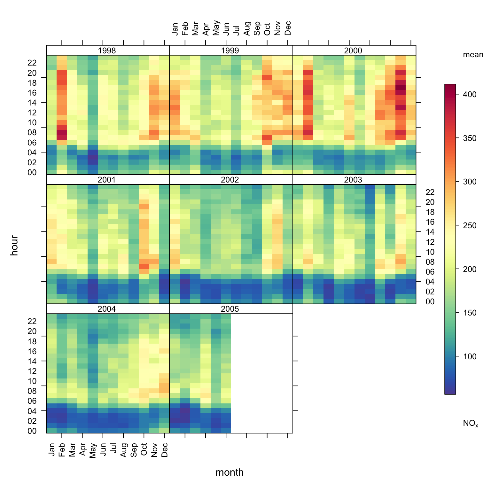
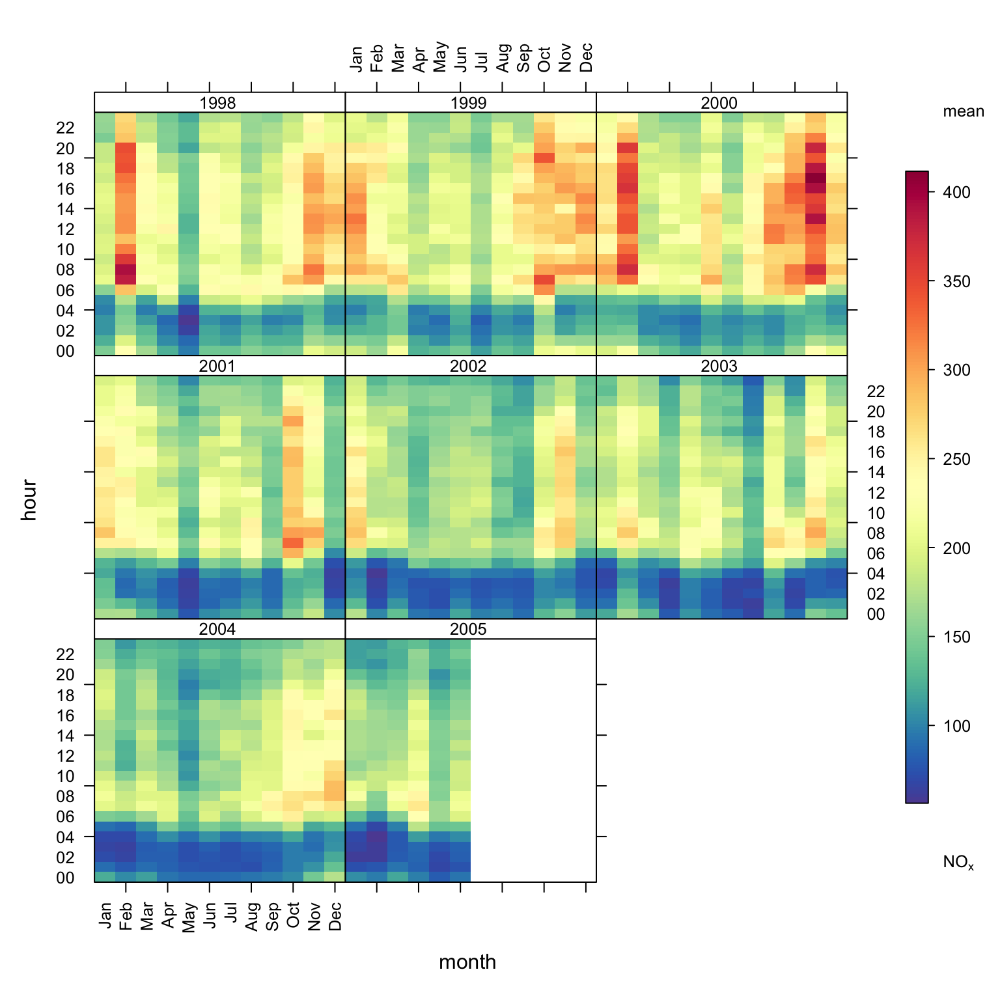
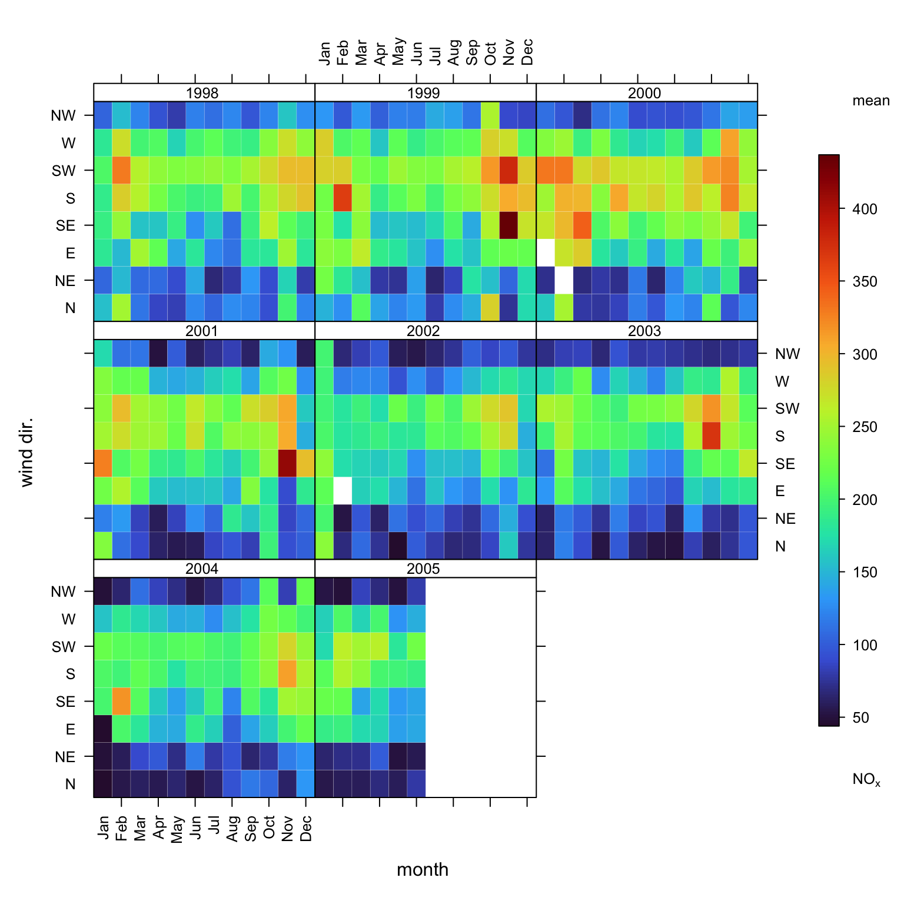
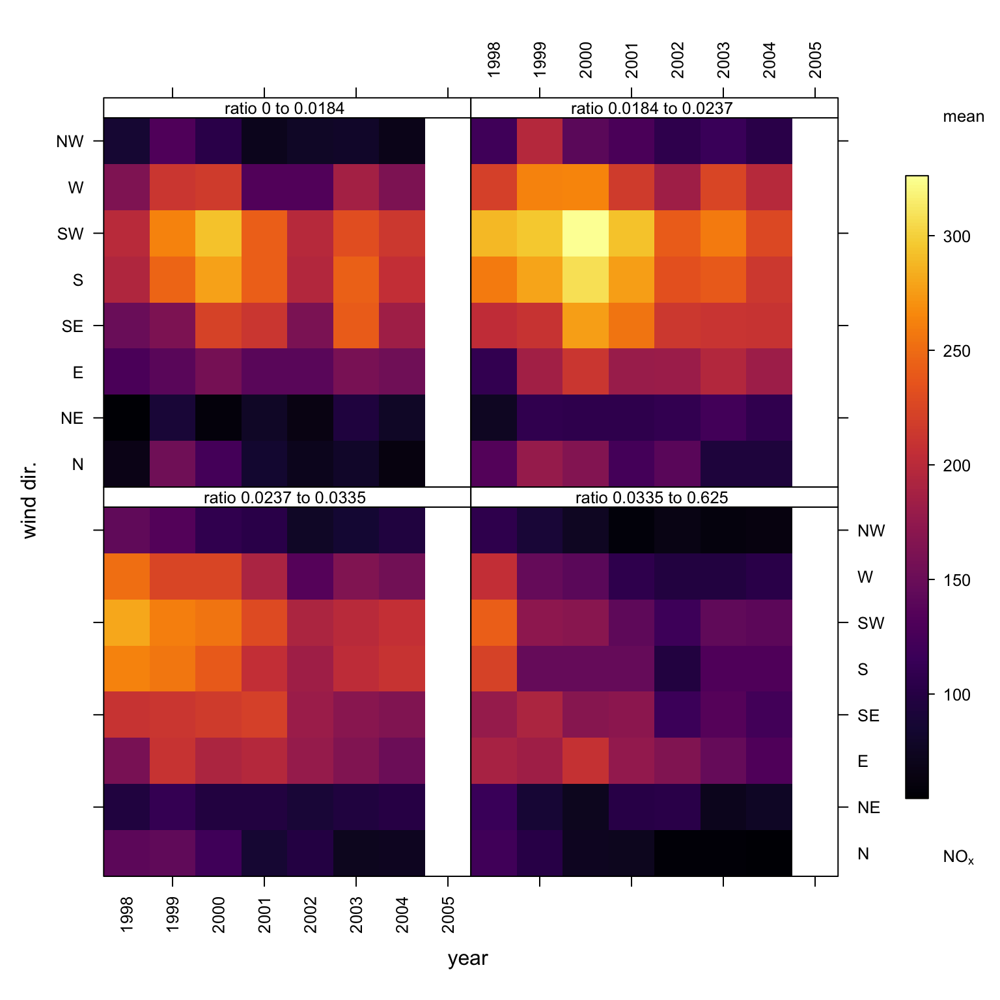
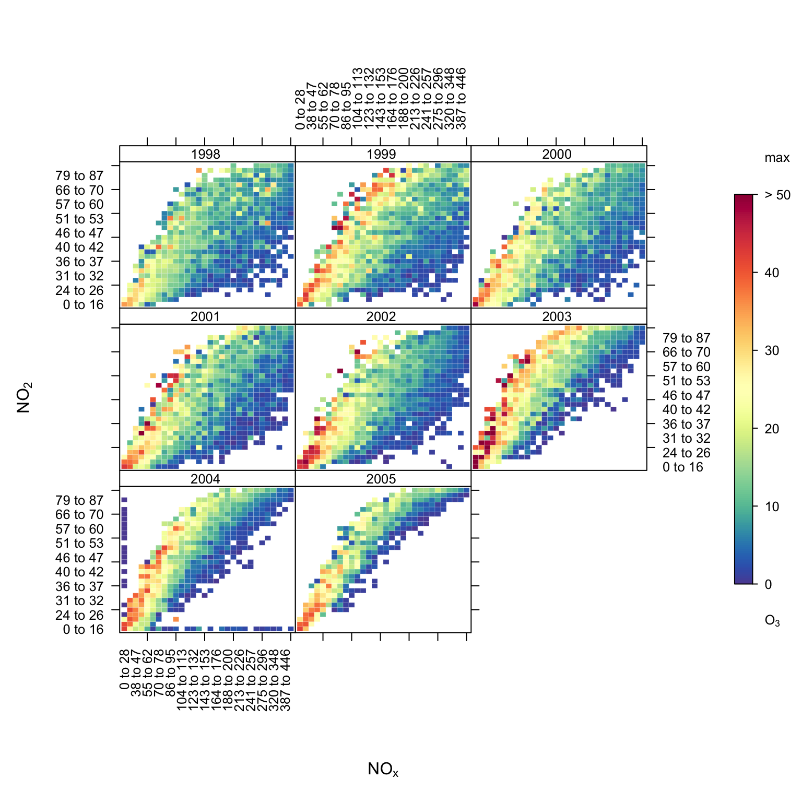
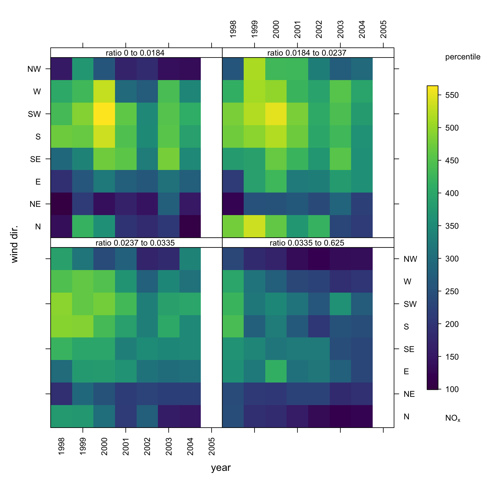
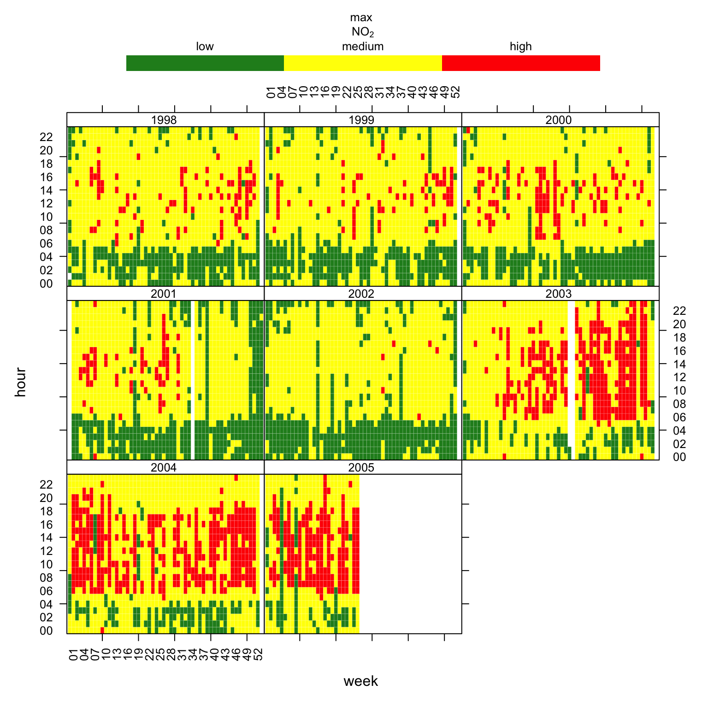

library(openair)
library(tidyverse)
trendLevel(mydata, pollutant = "nox")
trendLevel.The trendLevel function provides a way of rapidly showing a large amount of data in a condensed way. It is particularly useful for plotting the level of a value against two categorical variables. These categorical variables can pre-exist in a data set or be made on the fly using openair. By default it will show the mean value of a variable against two categorical variables but can also consider a wider range of statistics e.g. the maximum, frequency, or indeed a user-defined function. The function is much more flexible than this by showing temporal data and can plot ‘heat maps’ in many flexible ways. Both continuous colour scales and user-defined categorical scales can be used.
The trendLevel function shows how the value of a variable varies according to intervals of two other variables. The \(x\) and \(y\) variables can be categorical (factor or character) or numeric. The third variable (\(z\)) must be numeric and is coloured according to its value. Despite being called trendLevel the function is flexible enough to consider a wide range of plotting variables.
If the \(x\) and \(y\) variables are not categorical they are made so by splitting the data into quantiles (using cutData). Furthermore, the user can supply as many levels as they wish for the quantile using the option n.levels. Remember also there are lots of built-in options for x or y based on temporal variations (see Section 25.2) e.g. “month” (the default), “week”, “daylight” and so on.
The standard output from trendLevel is shown in Figure 14.1, which shows the variation in NOx concentrations by year and hour of the day. By default the function will use “month” for the x-axis and “hour” for the y-axis.
library(openair)
library(tidyverse)
trendLevel(mydata, pollutant = "nox")
trendLevel.trendLevel(mydata, pollutant = "nox", y = "wd",
border = "white",
cols = "turbo")
trendLevel output with wind direction as y.Figure 14.3 indicates that the highest NOx concentrations most strongly associate with wind sectors about 200 degrees, appear to be decreasing over the years, but do not appear to associate with an SO2 rich NOx source. Using type = "so2" would have conditioned by absolute SO2 concentration. As both a moderate contribution from an SO2 rich source and a high contribution from an SO2 poor source could generate similar SO2 concentrations, such conditioning can sometimes blur interpretations. The use of this type of ‘over pollutant’ ratio reduces this blurring by focusing conditioning on cases when NOx concentrations (be they high or low) associate with relatively high or low SO2 concentrations.
## new field: so2/nox ratio
mydata <- mutate(mydata, ratio = so2 / nox)
## condition by mydata$new
trendLevel(mydata, "nox", x = "year", y = "wd",
type = "ratio",
cols = "inferno")
trendLevel output with SO2 : NOx ratio type conditioning.The plot can be used in much more flexible ways. Here are some examples (not plotted):
A plot of mean O3 concentration shown by season and by daylight/nighttime hours.
trendLevel(mydata, x = "season", y = "daylight", pollutant = "o3")Or by season and hour of the day:
trendLevel(mydata, x = "season", y = "hour",
pollutant = "o3",
cols = "increment")How about NOx versus NO2 coloured by the concentration of O3? scatterPlot could also be used to produce such a plot. However, one interesting difference with using trendLevel is that the data are split into quantiles where equal numbers of data exist in each interval. This approach can make it a bit easier to see the underlying relationship between variables. A scatter plot may have too much data to be clear and also outliers (or regions with relatively few data) that make it harder to see what is going on. The plot generated by the command below makes it a bit easier to see that it is the higher quantiles of NO2 that are associated with higher O3 concentration (as well as low NOx and NO2 concentrations).
trendLevel(mydata, x = "nox", y = "no2", pollutant = "o3",
border = "white",
n.levels = 30, statistic = "max",
limits = c(0, 50))
trendLevel showing NOx against NO2, coloured by the concentration of O3.The plot can also be shown by wind direction sector, this time showing how O3 varies by weekday, wind direction sector and NOx quantile.
trendLevel(mydata, x = "nox", y = "weekday", pollutant = "o3",
border = "white", n.levels = 10, statistic = "max",
limits = c(0, 50), type = "wd")By default trendLevel subsamples the plotted pollutant data by the supplied x, y and type parameters and in each case calculates the mean. The option statistic has always let you apply other statistics. For example, trendLevel also calculated the maximum via the option statistic = "max". The user may also use their own statistic function.
As a simple example, consider the above plot which summarises by mean. This tells us about average concentrations. It might also be useful to consider a particular percentile of concentrations. This can be done by defining one’s own function as shown in Figure 14.5.
## function to estimate 95th percentile
percentile <- function(x) quantile(x, probs = 0.95, na.rm = TRUE)
## apply to present plot
trendLevel(mydata, "nox", x = "year", y = "wd",
type = "ratio",
cols = "viridis",
statistic = percentile)
trendLevel using locally defined statistic.This type of flexibility really opens up the potential of the function as a screening tool for the early stages of data analysis. Increased control of x, y, type and statistic allow you to very quick explore your data and develop an understanding of how different parameters interact. Patterns in trendLevel plots can also help to direct your openair analysis. For example, possible trends in data conditioned by year would suggest that functions like smoothTrend or TheilSen could provide further insight. Likewise, windRose or polarPlot could be useful next steps if wind speed and direct conditioning produces interesting features. However, perhaps most interestingly, novel conditioning or the incorporation of novel parameters in this type of highly flexible function provides a means of developing new data visualisation and analysis methods.
trendLevel can also be used with user defined discrete colour scales as shown in Figure 14.6. In this case the default \(x\) and \(y\) variables are chosen (month and hour) split by type (year).
trendLevel(mydata, pollutant = "no2",
x = "week",
border = "white", statistic = "max",
breaks = c(0, 50, 100, 500),
labels = c("low", "medium", "high"),
cols = c("forestgreen", "yellow", "red"),
key.position = "top")
trendLevel plot for maximum NO2 concentrations using a user-defined discrete colour scale.